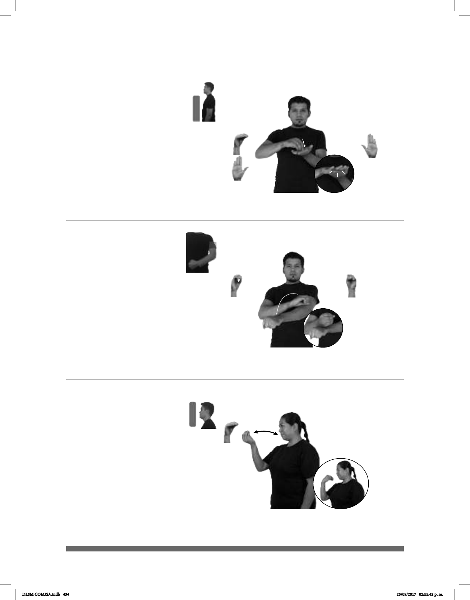

434
Seña: SB
MD seña que pasa de
O.5 a B-P. 2, MB B-P. 2
MD palma hacia abajo.
MB palma hacia arriba.
A la altura del pecho. MD
sobre MB.
Movimiento: Los dedos de MD se
extienden.
sust. f. Acuerdo o
compromiso entre dos o más personas
sobre el lugar, la fecha y la hora en
que deberán encontrarse; reunión que
resulta de este acuerdo.
Cita (O-19)
pro-NOSOTROS-DE-DOS CITA NOS-VEMOS
allá
Él y yo tenemos una cita, nos vemos allá.
Seña: SM
O.5
Palma hacia adentro.
A la altura de la boca.
Movimiento: La mano se mueve de atrás
repetidamente.
Boca semiabierta.
Simula la acción de
llevarse alimento a la boca.
1. v. tr. Tomar alimentos por la
boca, masticarlos y pasarlos al estómago.
2. sust. m. Toda sustancia que sirve para
nutrir a los seres vivos.
Comer(O-21)
______________________neg_
HOY pro-YO ARROZ COMER
Hoy no comí arroz.
Seña: SB
MD O.1, MB S.1
MD la palma inicia
hacia abajo y termina hacia adentro
MB palma hacia abajo.
La MD inicia sobre la
sangradura de MB y termina sobre
su muñeca.
Movimiento: La MD se mueve
formando un arco mientras el
antebrazo gira y cambia la
orientación de la mano.
Ciudad del estado de
Sonora, perteneciente a los Estados
Unidos Mexicanos.
PRÓXIMO VACACIONES pro-YO VIAJAR CIUDAD-OBREGÓN
Las próximas vacaciones iré de viaje a Ciudad Obregón.
(O-20)
DLSM COMISA.indb 434 25/09/2017 02:55:42 p. m.